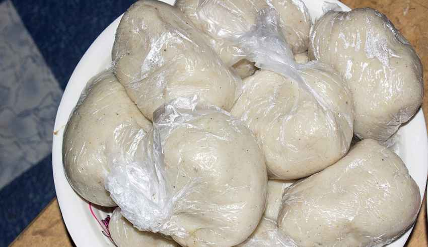
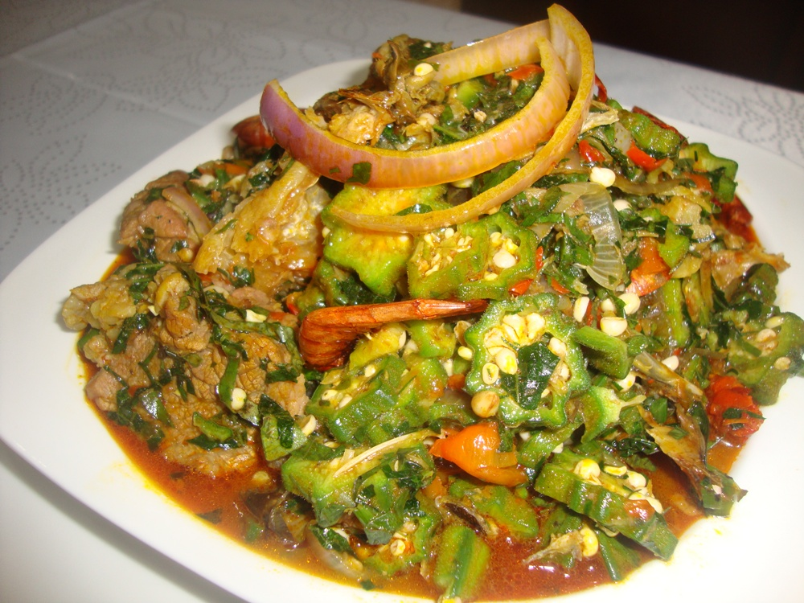

A food fanatic once said,
“One of the nicest things about life is
the way we must regularly stop whatever it is we are doing
and devote our attention to eating”.
If you must devote some attention then the Ghanaian delicacy,
Banku and Okro stew, is definitely worth the time.
Banku and Okro Stew is one of those dishes
Ghanaians can't simply do without.
Follow these simple steps to prepare Banku and Okro Stew.
INGREDIENTS
Ingredients for Banku
2 cups of Corn Dough
1 cup of Cassava Dough
1tea spoon of Salt
Ingredients for Okro Stew
2 cups of chopped Okra
1 pound beef(or any meat of your choice)
2 large onions
4 medium-sized tomatoes
Kpakpo shito pepper, Ginger, garlic
4 fingers of herrings
Cowhide (Wele)
1 salted fish(momoni)
Salt
Palm Oil
STEPS/PROCEDURES
How to Prepare The Banku

Mix Cassava dough with water and strain out the lumps.
(You can use a colander to make it easier)
Pour the mixture into a pot and add your corn dough to the mixture.
Add some more water and mix until the mixture is smooth and slightly thick.
Then add a teaspoon of salt to the mixture to taste
Place the pot on high heat until the mixture starts to boil.
Once it begins boiling use a spatula(Banku 'ta')
to knead the mixture to prevent it from forming lumps.
Continue to knead the mixture intermittently until it gets
smoother and thicker and its colour changes slightly.
Note: To know if your Banku is ready,
you can mash a little of the cooked mixture in a little water.
If it dissolves and turns milky then your Banku isn't ready.
You can as well taste it to check if its edible enough.
When the Banku is ready, dish it out with small balls and
wrap each ball in a plain polythene rubber.
Keep them in an airtight container or food warmer.
Banku can be kept for about two-three days without going bad,
depending on how well it is preserved.
How to prepare the okro stew

Wash chopped beef and cowhide and place in a saucepan,
add a little water and bring to a boil. Pour in blended mix of onion,
ginger and garlic and steam for about 10 mins.
Put chopped okro into another clean saucepan,
add a cup of water and let it simmer for about 8 mins.
Turn off the heat and allow it to cool.
Now pour some palm oil into another saucepan.
Fry salted fish for a while, then add sliced onions. Cook for about 3 mins
Wash and chop tomatoes and add to the sauce.
Wash your herrings and take out the bones,
add to the sauce and let it simmer for about 8 mins.
Now add your steamed beef, and cowhide (wele), stir and leave it for about
10 mins.
Finally, put in your cooked okro and stir to mix evenly,
reduce the heat and allow it to cook for about 5 mins.
Add some salt to your preferred taste( be careful though because momoni is naturally salty.
make sure you taste the sauce before adding more salt)